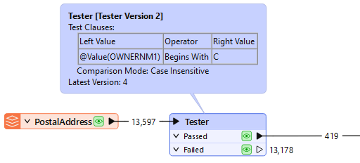
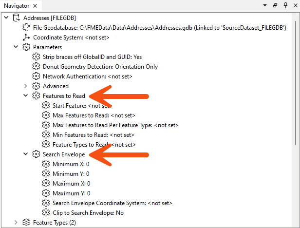
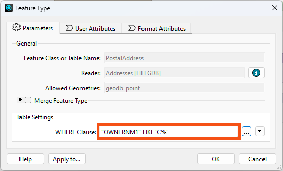
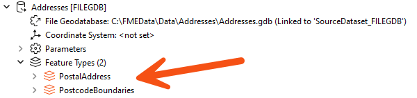
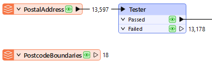
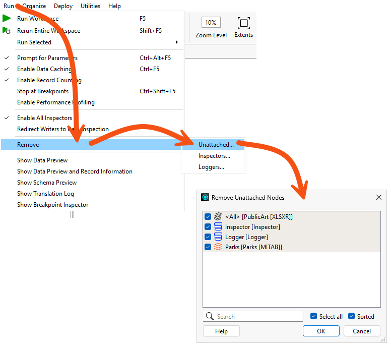
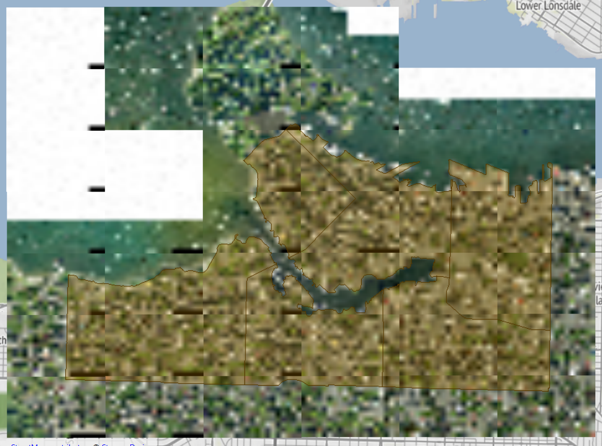
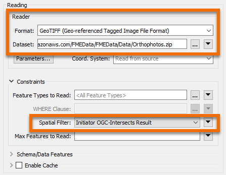
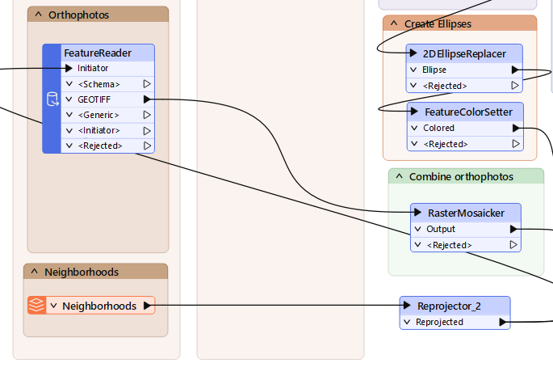
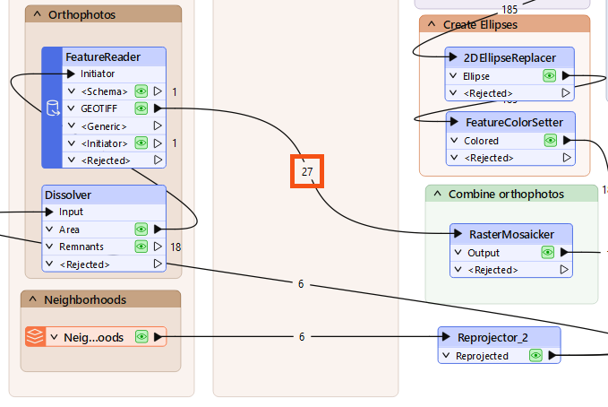

We've updated this course, so the videos don't exactly match the lessons. However, we've included them for you to review, and we will update them in a future release.
After completing this lesson, you’ll be able to:
In this lesson, you will:
We've updated this course, so the videos don't exactly match the lessons. However, we've included them for you to review, and we will update them in a future release.
This course focuses on optimizing workspace performance. It contains advice on reading, writing, transformers, and FME Flow.
Many of the tips in this course are also collected in the comprehensive Knowledge Base article, Performance Tuning FME.
The most important method for improving reading performance is to minimize the amount of data read. As already mentioned, reading excess features counts as unnecessary work and is, therefore, inefficient. In many workspaces, read features are preserved through most of the workflow. This means that every transformer can potentially run on all input data, making it vital to remove unnecessary data from your workflow as early as possible.
It's bad enough to read extra features, but that effect can be multiplied many times over when data caching is enabled. Therefore, you need to be extra careful to read no more data than is necessary.
For example, this workspace reads nearly 14,000 features but immediately discards all except 419 of them (ones where the owner's name begins with "C"):

In this scenario, it would be much more efficient just to read those approximately 400 features directly. Not only does it avoid reading unnecessary data, but it also avoids caching it twice over!
Fortunately, all formats have various sets of parameters that speed up feature reading by filtering the amount of data being read:

Search envelope defines the data to read as a geographic area. Restricting this means FME will read fewer features. These parameters are available on every spatial data reader but have the most effect when the source data is spatially indexed. Then, the query is carried out at its most efficient rate.
Similarly, several parameters are designed to let the user define the number of features to read. These parameters include the ability to define the maximum number of features to read and what features to start with. A parameter also defines which feature types (layers or tables) should be read.
By using these judiciously, the amount of data being read can be reduced, and the translation sped up. For example, if we knew that the first records in the dataset began with "C," we could set Max Features to Read to 419.
Other formats – particularly databases – have additional clauses that can help reduce the data flow:

For example, the Geodatabase reader feature type above has a ‘WHERE Clause’ parameter that applies the "owner name begins with 'C' test" more efficiently than reading the entire contents of a large table and using a Tester transformer.
In short, it is more efficient to use a reader parameter to filter source data than to read all the source data and then filter it with a transformer. Caching the reader feature type does not necessarily help, as you still have to wait for the large cache to be created, and are stuck working with a large amount of data for all additional processing.
SQL transformers are often more performant than readers. Learn more about SQL transformers.
The DatabaseQuerier transformer unifies querying across SQL and NoSQL databases, replacing SQLExecutor and SQLCreator and allowing users to execute complex queries in a single, configurable tool. With support for "Run Once" or "Input Driven" modes and future-proof design for new query languages, the DatabaseQuerier simplifies data access to improve FME’s interoperability. We cover it in detail in the Optimize Database Performance lesson.
Another potential bottleneck - specifically for formats with a table list – is when you have more feature types than necessary.
Here, the user is reading two tables from their Geodatabase:

However, the PostcodeBoundaries table is not connected to anything in their workspace. The unconnected table is still being read - and cached - but the data is being ignored:

Presumably, the user added the table for some reason but then decided they did not need it; in that case, they should delete the feature type from the FME workspace. Then, the table will not be read, and performance will improve.
When developing a workspace, it is easy to lose unused feature types, especially once the workspace grows in size. To remove these unused feature types quickly, go to Run > Remove > Unattached... in the menu bar.

This tool is less useful when there is just one unattached item, but it is more useful in a larger workspace with an unknown number of unattached objects.
FME reads features from readers in the order specified in the Navigator.
Generally, writer order impacts performance more than reader order. However, there are some exceptional cases where you may want to pay attention to the reader order:

Jennifer needs to review a colleague's workspace before the city spends a provincial grant on new public art. Her colleague's workspace reads park, neighborhood, public art, and orthophoto data, counts the artworks in each park, and produces a spreadsheet and a mosaic image. It returns the right answer, but it reads far more data than the analysis needs.
In this exercise, you will:
Three of the four readers supply data the analysis genuinely needs. The orthophotos are the exception, and confirming that is what tells you where the waste is.

Map tiles © Stadia Maps, © OpenMapTiles, © OpenStreetMap contributors, © Stamen Design
Picking the tiles you need by hand would work today and break the next time the neighborhoods dataset changes. A FeatureReader driven by the neighborhood boundaries keeps that selection correct on its own.




You have replaced a reader that covered the whole city with one driven by the area the analysis actually uses, cutting the imagery read from 40 tiles to 27.